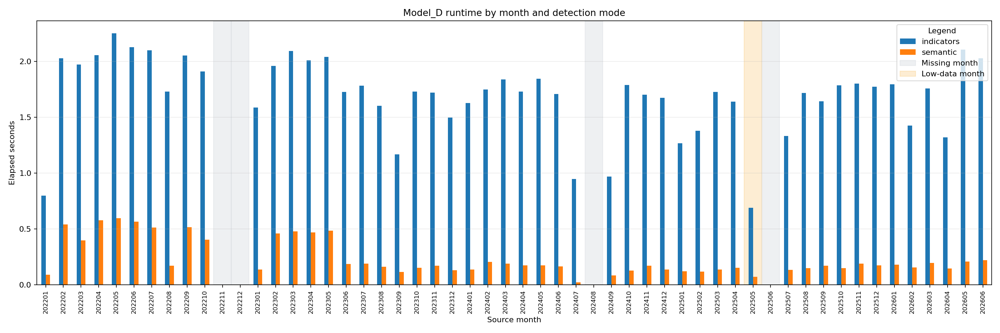
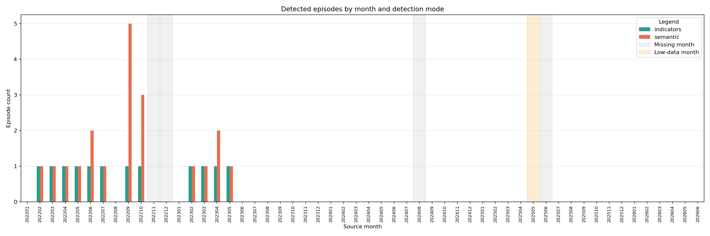
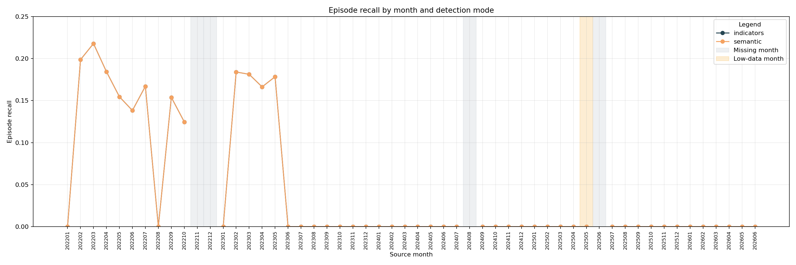
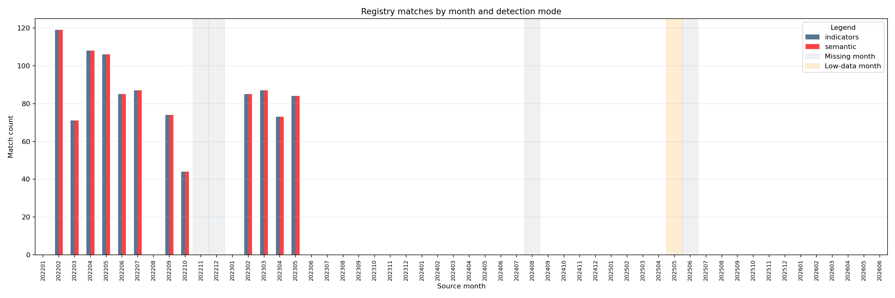

Generated from consolidated multi-month reassessment artifacts in /mnt/d2tb/home/jordieres/soft/I5.0/industrial-asset-reliability-monitoring/src/predictions/Model_D/final_reassessment.
| mode | months_processed | total_episodes | total_windows | total_matches | mean_runtime_seconds | median_runtime_seconds | mean_episode_recall | mean_temporal_iou | mean_family_recall |
|---|---|---|---|---|---|---|---|---|---|
| indicators | 50 | 12 | 31880 | 1023 | 1.694150 | 1.730664 | 0.040977 | 0.001784 | 0.040977 |
| semantic | 50 | 20 | 27124 | 1023 | 0.235449 | 0.172027 | 0.040977 | 0.003308 | 0.040977 |
| source_month | horizon_status | elapsed_seconds_indicators | elapsed_seconds_semantic | episode_count_indicators | episode_count_semantic | episode_recall_indicators | episode_recall_semantic | match_count_indicators | match_count_semantic |
|---|---|---|---|---|---|---|---|---|---|
| 202201 | processed | NaN | NaN | NaN | NaN | NaN | NaN | NaN | NaN |
| 202202 | processed | NaN | NaN | NaN | NaN | NaN | NaN | NaN | NaN |
| 202203 | processed | NaN | NaN | NaN | NaN | NaN | NaN | NaN | NaN |
| 202204 | processed | NaN | NaN | NaN | NaN | NaN | NaN | NaN | NaN |
| 202205 | processed | NaN | NaN | NaN | NaN | NaN | NaN | NaN | NaN |
| 202206 | processed | NaN | NaN | NaN | NaN | NaN | NaN | NaN | NaN |
| 202207 | processed | NaN | NaN | NaN | NaN | NaN | NaN | NaN | NaN |
| 202208 | processed | NaN | NaN | NaN | NaN | NaN | NaN | NaN | NaN |
| 202209 | processed | NaN | NaN | NaN | NaN | NaN | NaN | NaN | NaN |
| 202210 | processed | NaN | NaN | NaN | NaN | NaN | NaN | NaN | NaN |
| 202211 | missing | NaN | NaN | NaN | NaN | NaN | NaN | NaN | NaN |
| 202212 | missing | NaN | NaN | NaN | NaN | NaN | NaN | NaN | NaN |
| 202301 | processed | NaN | NaN | NaN | NaN | NaN | NaN | NaN | NaN |
| 202302 | processed | NaN | NaN | NaN | NaN | NaN | NaN | NaN | NaN |
| 202303 | processed | NaN | NaN | NaN | NaN | NaN | NaN | NaN | NaN |
| 202304 | processed | NaN | NaN | NaN | NaN | NaN | NaN | NaN | NaN |
| 202305 | processed | NaN | NaN | NaN | NaN | NaN | NaN | NaN | NaN |
| 202306 | processed | NaN | NaN | NaN | NaN | NaN | NaN | NaN | NaN |
| 202307 | processed | NaN | NaN | NaN | NaN | NaN | NaN | NaN | NaN |
| 202308 | processed | NaN | NaN | NaN | NaN | NaN | NaN | NaN | NaN |
| 202309 | processed | NaN | NaN | NaN | NaN | NaN | NaN | NaN | NaN |
| 202310 | processed | NaN | NaN | NaN | NaN | NaN | NaN | NaN | NaN |
| 202311 | processed | NaN | NaN | NaN | NaN | NaN | NaN | NaN | NaN |
| 202312 | processed | NaN | NaN | NaN | NaN | NaN | NaN | NaN | NaN |
| 202401 | processed | NaN | NaN | NaN | NaN | NaN | NaN | NaN | NaN |
| 202402 | processed | NaN | NaN | NaN | NaN | NaN | NaN | NaN | NaN |
| 202403 | processed | NaN | NaN | NaN | NaN | NaN | NaN | NaN | NaN |
| 202404 | processed | NaN | NaN | NaN | NaN | NaN | NaN | NaN | NaN |
| 202405 | processed | NaN | NaN | NaN | NaN | NaN | NaN | NaN | NaN |
| 202406 | processed | NaN | NaN | NaN | NaN | NaN | NaN | NaN | NaN |
| 202407 | processed | NaN | NaN | NaN | NaN | NaN | NaN | NaN | NaN |
| 202408 | missing | NaN | NaN | NaN | NaN | NaN | NaN | NaN | NaN |
| 202409 | processed | NaN | NaN | NaN | NaN | NaN | NaN | NaN | NaN |
| 202410 | processed | NaN | NaN | NaN | NaN | NaN | NaN | NaN | NaN |
| 202411 | processed | NaN | NaN | NaN | NaN | NaN | NaN | NaN | NaN |
| 202412 | processed | NaN | NaN | NaN | NaN | NaN | NaN | NaN | NaN |
| 202501 | processed | NaN | NaN | NaN | NaN | NaN | NaN | NaN | NaN |
| 202502 | processed | NaN | NaN | NaN | NaN | NaN | NaN | NaN | NaN |
| 202503 | processed | NaN | NaN | NaN | NaN | NaN | NaN | NaN | NaN |
| 202504 | processed | NaN | NaN | NaN | NaN | NaN | NaN | NaN | NaN |
| 202505 | low_data | NaN | NaN | NaN | NaN | NaN | NaN | NaN | NaN |
| 202506 | missing | NaN | NaN | NaN | NaN | NaN | NaN | NaN | NaN |
| 202507 | processed | NaN | NaN | NaN | NaN | NaN | NaN | NaN | NaN |
| 202508 | processed | NaN | NaN | NaN | NaN | NaN | NaN | NaN | NaN |
| 202509 | processed | NaN | NaN | NaN | NaN | NaN | NaN | NaN | NaN |
| 202510 | processed | NaN | NaN | NaN | NaN | NaN | NaN | NaN | NaN |
| 202511 | processed | NaN | NaN | NaN | NaN | NaN | NaN | NaN | NaN |
| 202512 | processed | NaN | NaN | NaN | NaN | NaN | NaN | NaN | NaN |
| 202601 | processed | NaN | NaN | NaN | NaN | NaN | NaN | NaN | NaN |
| 202602 | processed | NaN | NaN | NaN | NaN | NaN | NaN | NaN | NaN |
| 202603 | processed | NaN | NaN | NaN | NaN | NaN | NaN | NaN | NaN |
| 202604 | processed | NaN | NaN | NaN | NaN | NaN | NaN | NaN | NaN |
| 202605 | processed | NaN | NaN | NaN | NaN | NaN | NaN | NaN | NaN |
| 202606 | processed | NaN | NaN | NaN | NaN | NaN | NaN | NaN | NaN |
Gray bands mark missing months in the requested horizon. Amber bands mark low-data months.



